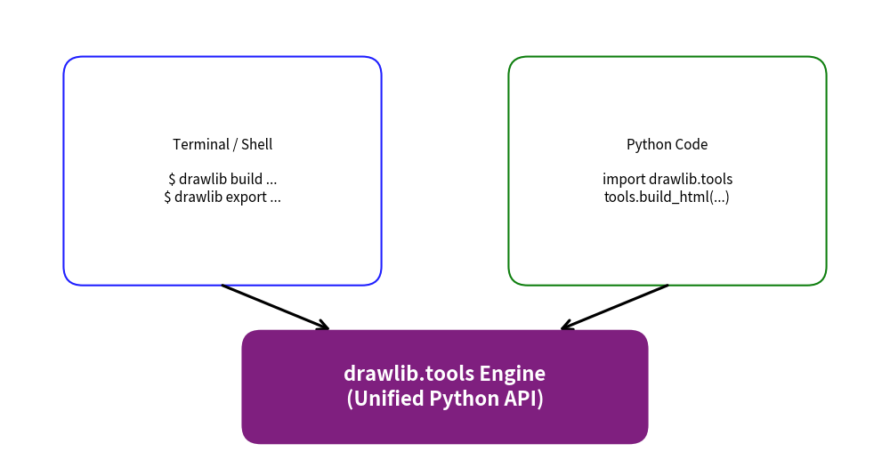

Programmatic Tools API (drawlib.tools)
The drawlib.tools module is the official Python developer API that powers the Drawlib CLI.
While terminal commands like drawlib build, drawlib export, and drawlib serve are ideal for command-line workflows, you should use drawlib.tools whenever you need to execute CLI-equivalent operations directly within Python code.
This programmatic interface is specifically designed for:
- CI/CD Build Pipelines: Automating multi-format documentation builds (HTML, Markdown, PDF) inside deployment scripts.
- Automated Testing Suites: Extracting diagrams and asserting image generation using
pytestwithout invoking shell subprocesses. - Custom Documentation Generators: Embedding Drawlib's diagram compiler into existing Python-based static site engines or documentation toolchains.
- Automation Sidecars & Bots: Generating, exporting, or validating diagrams dynamically from background tasks and server services.
1. CLI Command vs. Programmatic API Mapping
All top-level CLI commands have direct 1-to-1 functional counterparts in drawlib.tools:
| CLI Command | Programmatic Function | Module / Alias | Description |
|---|---|---|---|
drawlib build html |
build_html(...) |
drawlib.tools.build.html |
Compile Markdown files or directory into an HTML site. |
drawlib build markdown |
build_markdown(...) |
drawlib.tools.build.markdown |
Compile Markdown files for GitHub repository browsing. |
drawlib build pdf |
build_pdf(...) |
drawlib.tools.build.pdf |
Compile documents to vector PDF via headless Chromium. |
drawlib build images |
build_image(...) |
drawlib.tools.build.image |
Batch execute standalone Python drawing scripts into images. |
drawlib export |
export_block(...) |
drawlib.tools.export.export_block |
Extract and render a single diagram block or script to image. |
drawlib show |
show_block(...) |
drawlib.tools.show.show_block |
Render and display diagram block in desktop GUI viewer. |
drawlib init |
init_project(...) |
drawlib.tools.init.init_project |
Scaffold starter documentation project structures. |
drawlib serve |
serve_docs(...) |
drawlib.tools.serve.serve_docs |
Launch local preview HTTP web server with link checker. |
drawlib cache |
list_cache(), clear_cache() |
drawlib.tools.cache |
Inspect, download, or clear font and icon asset cache. |
drawlib css |
list_css(), export_css(...) |
drawlib.tools.css |
Inspect or extract built-in CSS themes and stylesheets. |
drawlib template |
list_templates(), validate_template(...) |
drawlib.tools.template |
Inspect, export, or validate Jinja2 HTML templates. |

2. Imports & Module Structure
You can import functions either directly from drawlib.tools or from categorized submodules:
# Direct top-level imports
from drawlib.tools import (
build_html,
build_markdown,
build_pdf,
build_image,
export_block,
show_block,
init_project,
serve_docs,
clear_cache,
download_cache,
list_cache,
list_css,
export_css,
list_templates,
export_template,
validate_template,
)
# Or namespace submodule access
from drawlib.tools import build, cache, css, export, init, serve, show, template
3. Document & Image Compilation (build)
3.1. build_html()
Compiles authoring Markdown source files into a responsive static HTML site:
from drawlib.tools import build_html
build_html(
input_path="docs_src/", # Source directory or single .md file
output_path="docs_html/", # Destination directory or .html file
config_path="config.py", # Optional Python configuration script
css_path="google", # Custom CSS file path or built-in preset ("default", "google")
template_path=None, # Custom Jinja2 template path (None uses built-in sidebar)
css_mode="auto", # "auto" (external for dirs, embed for single files), "embed", "external"
no_cache=False, # Set True to force re-executing all diagram blocks
image_format="png", # "png", "svg", or "inline_svg"
)
3.2. build_markdown()
Compiles Markdown documents for GitHub repository browsing. Code blocks are preserved as Python syntax-highlighted blocks followed by relative image links:
from drawlib.tools import build_markdown
build_markdown(
input_path="docs_src/",
output_path="docs/",
config_path="config.py",
image_format="png",
)
3.3. build_pdf()
Renders Markdown documents to print-ready vector PDF using headless Chromium via Playwright:
from drawlib.tools import build_pdf
build_pdf(
input_path="docs_src/architecture.md",
output_path="dist/architecture.pdf",
config_path="config.py",
css_path="print.css",
)
3.4. build_image()
Executes all standalone .py drawing scripts within a directory and exports rendered images:
from drawlib.tools import build_image
build_image(
input_path="drawings/",
output_path="dist/images/",
config_path="config.py",
grid=False,
)
4. Single Diagram Extraction & Verification (export & show)
4.1. export_block()
Extracts and renders a single drawlib block from a Markdown file or a standalone Python script directly to an image file.
This is the primary function used by automated testing suites and CI workflows:
from drawlib.tools import export_block
# Export block 1 from a Markdown document:
export_block(
file_path="docs_src/overview.md",
target="1", # 1-based index or target image name (e.g. "arch.png")
output_path="scratch/arch.png",
grid=True, # Overlay coordinate grid lines (-g)
config_path="config.py",
)
# Export directly from a standalone Python script:
export_block(
file_path="scripts/my_schema.py",
output_path="dist/schema.png",
grid=False,
)
4.2. show_block()
Opens an interactive desktop GUI preview window displaying the rendered diagram:
from drawlib.tools import show_block
# Open desktop GUI preview for block 2 with coordinate grid overlay:
show_block(
file_path="docs_src/overview.md",
target="2",
grid=True,
)
5. Project Scaffolding (init)
The init tools automate generating initial directory trees and starter files:
from drawlib.tools import init_project, list_project_types
# Check available starter templates:
print(list_project_types())
# Output: ['site', 'simple', 'pdf']
# Scaffold a documentation website project:
init_project(
project_type="site",
target_dir="./my_project",
force=False,
)
6. Local Server & Asset Management
6.1. Local HTTP Server (serve_docs)
Runs a local HTTP development server to test compiled documentation websites:
from drawlib.tools import serve_docs
serve_docs(
directory="docs_html/",
port=8080,
open_browser=True,
check_links=True, # Pre-scans for broken links or missing static assets
)
6.2. Font & Icon Cache (cache)
Manage downloaded assets programmatically:
from drawlib.tools.cache import clear_cache, download_cache, list_cache
# List cached font files and icons:
cached_files = list_cache()
# Pre-download all default font packages for offline execution:
download_cache()
# Clear cache to free storage:
clear_cache()
6.3. Template & CSS Management (template & css)
from drawlib.tools.template import export_template, list_templates, validate_template
from drawlib.tools.css import export_css, list_css
# Inspect and export templates:
templates = list_templates()
export_template("sidebar", "my_sidebar.html.j2")
# Validate template syntax and required Jinja2 placeholders:
validate_template("my_sidebar.html.j2")
# Inspect and export CSS presets:
presets = list_css()
export_css("default", "base_theme.css")
7. Practical Automation Examples
7.1. Full Documentation Pipeline Script (build_pipeline.py)
A complete automated build script that compiles GitHub Markdown, static HTML, and release artifacts simultaneously:
import sys
from pathlib import Path
from drawlib.tools import build_html, build_markdown, export_block
def main() -> None:
src_dir = Path("docs_src")
md_dir = Path("docs")
html_dir = Path("docs_html")
print("[1/3] Compiling GitHub Markdown documentation...")
build_markdown(input_path=str(src_dir), output_path=str(md_dir))
print("[2/3] Compiling Responsive HTML static site...")
build_html(input_path=str(src_dir), output_path=str(html_dir), css_path="google")
print("[3/3] Exporting hero diagram for repository banner...")
export_block(
file_path=str(src_dir / "index.md"),
target="1",
output_path="assets/banner.png",
)
print("Documentation build completed successfully!")
if __name__ == "__main__":
main()
7.2. Automated Visual Testing with Pytest
Validate that Markdown diagrams compile without errors and produce valid image outputs:
from pathlib import Path
from drawlib.tools import export_block
def test_architecture_diagram_renders(tmp_path: Path) -> None:
"""Ensure that the architecture diagram compiles and produces a non-empty image."""
output_image = tmp_path / "arch_test.png"
export_block(
file_path="docs_src/foundations/canvas.md",
target="1",
output_path=str(output_image),
grid=False,
)
assert output_image.exists()
assert output_image.stat().st_size > 1024 # Ensure image is not 0 bytes
8. Related Topics
- CLI Reference
- Document Builder Overview
- Working with AI Agents
- Rendering from Code (
get_dimage_from_code)
© 2026 drawlib by Yuichi Ito. Released under the Apache 2.0 License.